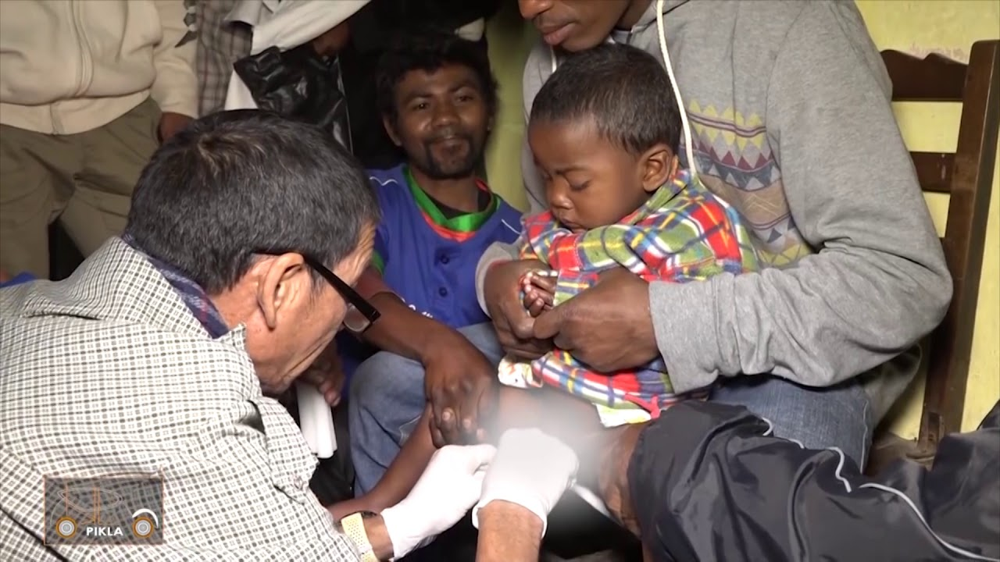
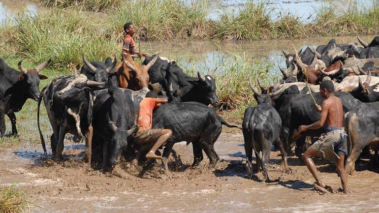
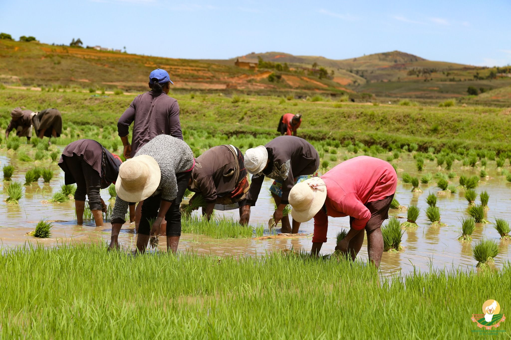

Kolontsaina
Ny Fora Zaza any Behasy sy any Soaranomanombo
Ny Fora Zaza dia fomban-drazana iray izay tsy maintsy lalovana ny zazalahy rehetra eo amin'ny maha Malagasy. Io hetsika io dia atao rehefa mahatratra herintaona ny zaza amin'ny ankapobeny ary manamarika ny dingana manandanja eo amin’ny fiainany. Fianakaviana sy namana no miara-mifety, miaraka amin'ny sakafo sy hira mahazatra, mba hitso-drano ny zaza ho amin'ny fitomboana sy fahombiazana.
Ny Kiridy any Behasy sy any Soaranomanombo
Ny Kiridy dia hetsika ataon'ny mponina rehefa hanala vava amin'ny ankapobeny. Ny kiridy dia fety ohatra ny famadihana ihany, tsy azo itomaniana mazava ho azy fa miara-mifety daholo ny mpianakavy, ny namana, ary ny mpiray vodirindrina. Mandritra io fotoana io, ny olona rehetra dia mankalaza amin’ny firavoravoana sy fifaliana, manamarika ny fiarahamiasa sy ny firaisankina eo amin’ny mponina.
Ny Savika any Behasy sy any Soaranomanombo
Ny Savika dia lalao mampiavaka ny faritra izay mifaninana amin'ny fanagadrana omby. Io lalao io dia ahitana tanora marisika ary lasa fialamboly lehibe eo amin’ny mponina. Na dia mampidi-doza aza izy, dia ahitana fahaiza-manaon’ireo tanora mpandray anjara, ary manaitra ny rehetra manaraka ilay hetsika. Ity hetsika ity dia manamafy ny firaisankinan’ny fiaraha-monina eo an-toerana. Fa ny aty Behasy dia rehefa manintsaka tanimbary ny olona dia efa manao izany.
Ny Haogna any Behasy sy any Soaranomanombo
Ny Haogna dia fomba fanao ny olona any an-toerana. Ny haogna moa dia fomba fiasa, izany hoe miaraka manao ny asan'olona iray ny iray antanana sy ny havana, na dia tsy miray tanana aza. Amin'izany dia mety hisy fiarahana misakafo sy hafaliana, indrindra fa ny fisotroana toaka gasy. Manamafy ny fifankatiavana sy ny firaisankina eo amin’ny mpiray tanindrazana ny Haogna, manamarika fotoana iray feno firavoravoana sy fanampiana.
Famintinana
Ny Behasy sy ny Vohipolo dia anisany mitahiry kolontsaina sy fomban-drazana manan-danja. Amin'ny alalan'ny fombafomba sy ny kolontsaina toy ny Fora zaza, Kiridy, Savika, ary Haogna, dia manatanteraka ireo hetsika mavesatra ny mponina, manamafy ny firaisankina sy ny fitiavana eo amin'ny samy Malagasy. Noho izany, ny fitiavana sy ny fanajana ny kolontsaina dia zava-dehibe amin'ny fampandrosoana sy ny fiarovana ny faritra.